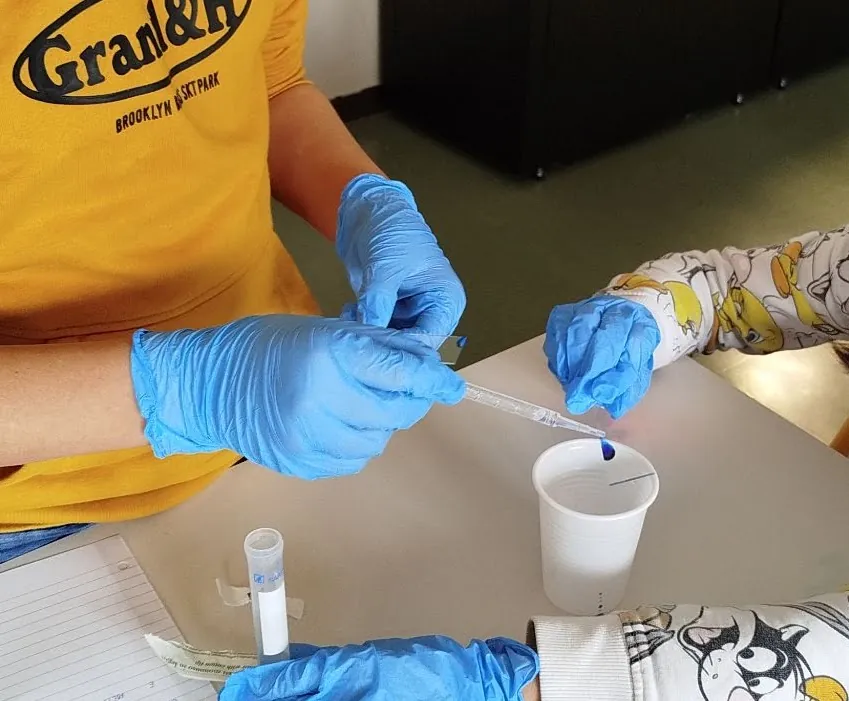

ClassLab nasce
La prima edizione di ClassLab ha preso forma nel 2022, quando il progetto, ancora sperimentale, ha varcato per la prima volta le porte di due scuole della città di Trieste. In questa fase iniziale, 10 classi quarte e quinte della scuola primaria sono state coinvolte in un percorso di scoperta della biologia attraverso la sperimentazione diretta.
Nonostante le risorse limitate, gli strumenti semplici e la struttura ancora in fase di definizione, l’entusiasmo è stato palpabile. Modelli 3D, microscopi ottici e attività pratiche hanno permesso ai bambini di osservare le cellule, colorare vetrini, manipolare oggetti e concetti scientifici con le proprie mani. È stata anche l’occasione per testare sul campo il modello di Peer Education: un solo studente-divulgatore, formato ad hoc, ha guidato gli incontri, ottenendo da subito una risposta sorprendentemente positiva.

I feedback degli insegnanti hanno confermato l’efficacia dell’approccio: gli studenti erano motivati, curiosi, e per la prima volta alcuni di loro hanno chiesto di “fare scienza” anche a casa. È stato il primo, fondamentale passo di un progetto che da lì in avanti non si sarebbe più fermato.
Portiamo la scienza nella tua classe
Laboratori pratici, guidati da giovani divulgatori e completamente gratuiti per le scuole.